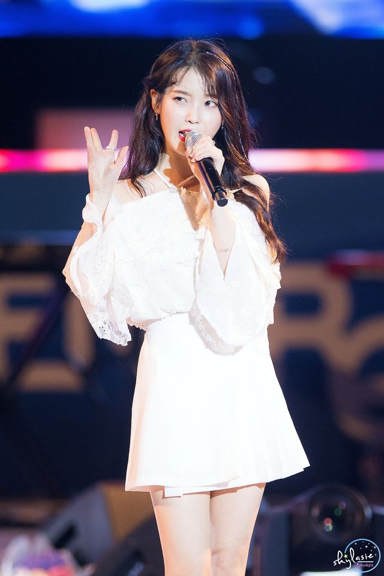

《花書籤2》

《BBIBBI》

李知恩韓語：이지은 Lee Ji Eun，英語：Lee Ji Eun，1993年5月16日－）， 藝名IU（韓語：아이유 A I Yu ），韓國創作歌手、演員。藝名「IU」是「I」和 「You」的複合詞，意為「你我通過音樂成為一體」。
IU於1993年5月16日生於韓國，自小在首爾長大，與其父母和弟弟住在一起，家裡曾開名為寶物島的文具店。 IU上小學，家庭經濟狀況惡化，父母因為為他人作擔保而欠下了巨債，一家人被逼要分開生活，她和弟弟被 迫與父母分開居住，與IU的奶奶和表姐在一間公寓中度過了一年多貧困的生活。這一段時間，IU與她的父母 接觸不多，因而很感激奶奶的出現。
在中學時，IU發現了她對唱歌的熱情。在校內運動會演唱並贏得了老師及同學的掌聲後，IU萌生了成為歌手 的想法。她曾先後參加過20次選拔但均被拒絕，並且曾被偽造的娛樂公司欺騙。2007年10月，IU通過當時經 紀公司LOEN娛樂的試鏡，並成為練習生。儘管認為經過三到四年的訓練後她可能最終會被選入一個女子團體， 但她在訓練10個月後便隨即發行她的首張個人專輯。因爲曾經艱苦的生活，IU說她「喜歡在練習室」，在那 裡她可以吃她想吃的東西，並且有睡覺的地方。在出道之前，LOEN娛樂將其藝名命名為「IU」。藝名從「我 和你」（I and You）中引申而出，象徵著音樂在人與人之間所產生的凝聚力。
IU歌唱事業的迅速發展導致她時常曠課，學習成績除韓國文學外均有所下降。在2011年IU於同德女子高 等學校畢業後，IU決定繼續她的歌唱事業，放棄進一步的高等教育。
| IU | |
|---|---|
|

2019年5月17日 |
|
| 女藝人 [展開] | |
| 本名 | 李知恩 |
| 原文名 | 이지은 |
| 羅馬拼音 | Lee Ji Eun |
| 暱稱 | 國民妹妹、李知金、李知銅、Jing-Jjang、國民歌手、音源女王、行走的CD |
| 國籍 |  大韓民國 大韓民國 |
| 出生 |
1993年5月16日(29歲，屬雞，金牛座)
大韓民國首爾特別市廣津區
|
| 身高 | 161.8 cm |
| 血型 | O 型 |
| MBTI | INFJ |
| 粉絲名 | 유애나 Uaena |
| 應援色 | 螢光黃 |
| 職業 | 創作歌手、音樂製作人、演員、主持人、YouTuber |
| 語言 | 韓語、日、英語、華語、粵語 |
| 教育程度 | 同德女子高等學校 |
| 音樂類型 | 韓國流行音樂、謠曲 |
| 演奏樂器 | 聲樂、吉他、電吉他、鋼琴、爵士鼓 |
| 出道地點 |
|
| 出道作品 | 大韓民國《Lost Child》 |
| 代表作品 |
|
| 活躍年代 | 2008年至今 |
| 唱片公司 |
|
| 經紀公司 |
|
| 簽名 | |
| 韓語名稱 | |
| 諺文 | 이지은 |
| 漢字 | 李知恩 |
| 文觀部式 | I Jieun |
| 馬-賴式 | Yi Chiŭn |
| 藝名 | |
| 諺文 | 아이유 |
| 文觀部式 | Aiyu |
| 馬-賴式 | Aiyu |
| 獎項 | |
音源大賞 - 金唱片獎
|
|
 日本 2012年1月24日
日本 2012年1月24日